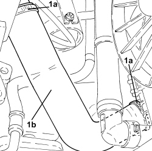
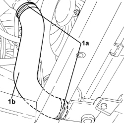

1048B20 AIR SUPPLY HOSE FROM HEAT EXCHANGER TO RIGID PIPE - REPLACE
- Path
- Procedures > 10 ENGINE > 1048 ENGINE AIR SUPPLY CIRCUIT > 1048B PRESSURE AIR CIRCUIT > 1048B20 AIR SUPPLY HOSE FROM HEAT EXCHANGER TO RIGID PIPE - REPLACE
- Kind
- repair procedure (removal / refitting; the operation number is the code)
- Applies to
- engines: 1.9 JTD 8V, 1.9 JTD 16V, 2.4 JTD 20V; all production periods
- Interactive page
- https://sloeber94.github.io/elrnDB/#/939010523
Applies to: engines: 1.9 JTD 8V, 1.9 JTD 16V; all production periods
 Removing
Removing
 Refitting
Refitting
Applies to: engines: 2.4 JTD 20V; all production periods
Removing
Refitting- Position the vehicle on a lift.
Op. 7055B54 UNDER ENGINE PROTECTION/GUARD - R.R.
1. Loosen the bands (1a) and remove the air supply hose between the heat exchanger and the rigid pipe (1b).

Applies to: engines: 2.4 JTD 20V; all production periods
Refitting
Removing- Place the air supply sleeve from the heat exchanger to the rigid pipe back in its housing and fasten it using the bands.
Op. 7055B54 UNDER ENGINE PROTECTION/GUARD - R.R.
- Remove the vehicle from the lift.